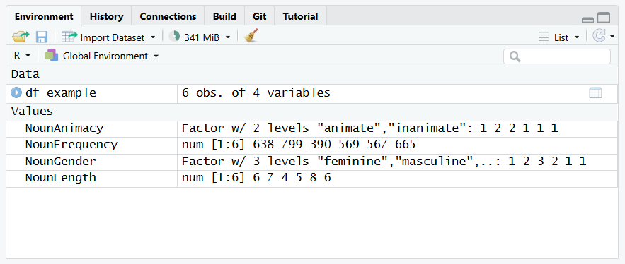
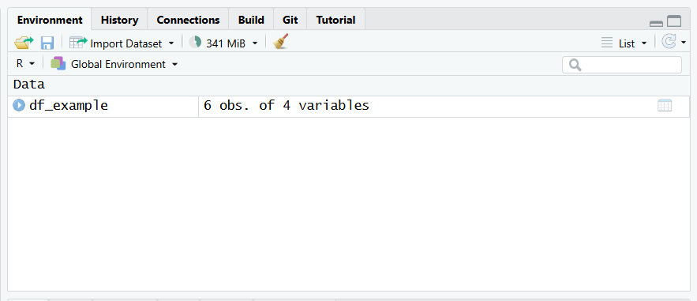
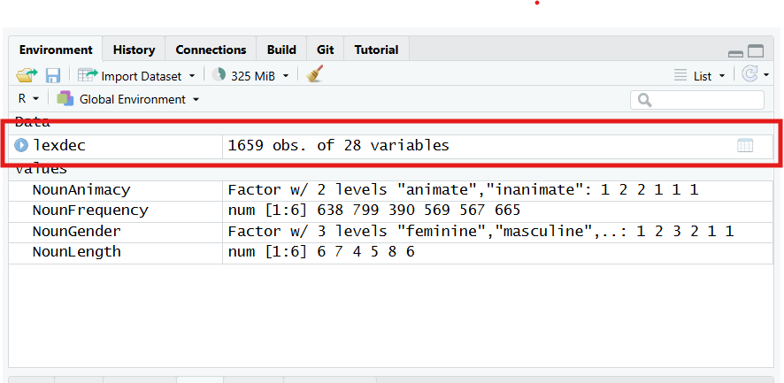
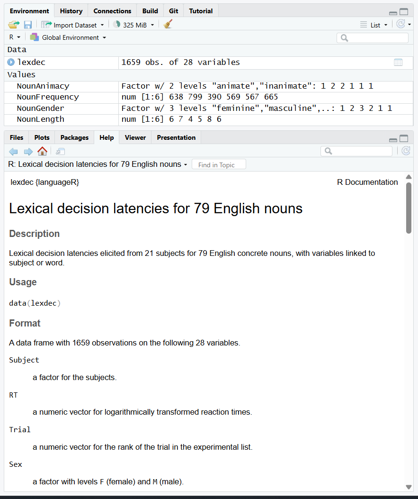
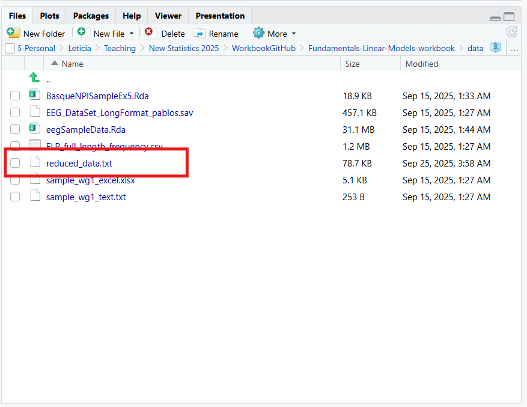
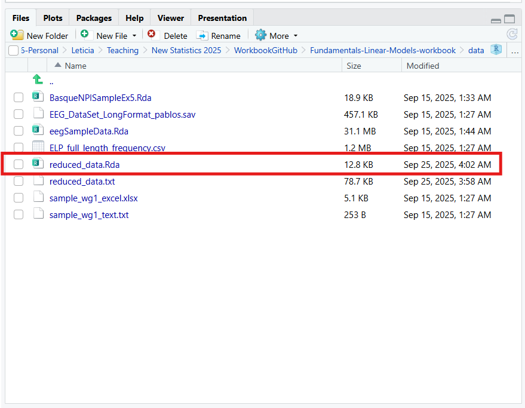

NounAnimacy<-c("animate","inanimate","inanimate","animate","animate","animate")
NounGender<-c("feminine","masculine","neuter","masculine","feminine","feminine")
NounLength<-c(6,7,4,5,8,6)
NounFrequency<-c(638,799,390,569,567,665) Assignment #1 - Answer key
Task#1: Creating a dataframe
You were asked to create a dataframe made up sample data according to the following prescription:
4 columns/variables: one column with a factor with two levels, another column with a factor with 3 levels and two columns with numeric values.
6 rows or observations
This can be done exactly as in the example we followed in Workgroup 1, with the steps replicated below:
1.1. Create variables with the data.
As you were asked to create 6 observations, every variable contains six entries.
1.2. Create factors
The variables created above with categorical entries are considered as character vectors. We should convert them into factors using the function factor() .
NounAnimacy <- factor(NounAnimacy)
NounGender <- factor(NounGender)
Tip
The following could be performed in a single step by nesting functions as in the code below:
NounAnimacy <- factor(c("animate","inanimate","inanimate","animate","animate","animate"))
NounGender<- factor(c("feminine","masculine","neuter","masculine","feminine","feminine"))1.3. Create a dataframe
We can define a dataframe based on the variables we created as:
df_example<-data.frame(NounAnimacy,NounGender,NounLength,NounFrequency)
df_example NounAnimacy NounGender NounLength NounFrequency
1 animate feminine 6 638
2 inanimate masculine 7 799
3 inanimate neuter 4 390
4 animate masculine 5 569
5 animate feminine 8 567
6 animate feminine 6 665If you look at the Environment window, a new variable was created called example with the specified contents:

Important
Note that when creating the dataset using the data.frame() function it builds a copy of the data. Modifying the original variables will not change df_example . You can remove the variables to clean up the workspace using rm()
rm(NounAnimacy,NounFrequency, NounGender, NounLength)Only df_example is left in the environment now:

and you can access the individual columns in the dataframe using the $ operator. For example to see the column NounGender
df_example$NounGender[1] feminine masculine neuter masculine feminine feminine
Levels: feminine masculine neuterTask#2: loading required libraries
Looking at the content of the assignment tasks, we will use data from the languageR package and functions from the dyplr package, which is part of the tidyverse environment.
To use both of them we have to load the libraries first
# add code to load the required libraries
library(languageR)
library(tidyverse)── Attaching core tidyverse packages ──────────────────────── tidyverse 2.0.0 ──
✔ dplyr 1.1.4 ✔ readr 2.1.5
✔ forcats 1.0.0 ✔ stringr 1.5.2
✔ ggplot2 4.0.0 ✔ tibble 3.3.0
✔ lubridate 1.9.4 ✔ tidyr 1.3.1
✔ purrr 1.1.0
── Conflicts ────────────────────────────────────────── tidyverse_conflicts() ──
✖ dplyr::filter() masks stats::filter()
✖ dplyr::lag() masks stats::lag()
ℹ Use the conflicted package (<http://conflicted.r-lib.org/>) to force all conflicts to become errorsTask#3: Working with and exploring dataframes
From the languageR library a sample dataframe called lexdec is used in this assignment. This dataset contains lexical decision latencies elicited from 21 subjects for 79 English concrete nouns.
3.1. Load dataset in the environment
To use the lexdec dataset, we load it in the environment using the function data() . Although this step is not needed to access the data, it conveniently includes is as any other variable in the Environment window, so that it is possible to inspect it.
data(lexdec)
You can browse the information on the dataset in the documentation included with the package. You can do that with the help() function, using ? or searching in the help tab.
help(lexdec)
?lexdecThe help tab shows the description of each of the variables in the dataset

3.2. Explore contents of the dataset
You were asked to show the first rows of the dataset.
Typing the name of the dataset will show you the full contents, which is not too handy. Instead you can use View(lexdec) to load it in the RStudio Viewer, or, just to inspect he first rows, you can use the head() function as follows:
head(lexdec) Subject RT Trial Sex NativeLanguage Correct PrevType PrevCorrect
1 A1 6.340359 23 F English correct word correct
2 A1 6.308098 27 F English correct nonword correct
3 A1 6.349139 29 F English correct nonword correct
4 A1 6.186209 30 F English correct word correct
5 A1 6.025866 32 F English correct nonword correct
6 A1 6.180017 33 F English correct word correct
Word Frequency FamilySize SynsetCount Length Class FreqSingular
1 owl 4.859812 1.3862944 0.6931472 3 animal 54
2 mole 4.605170 1.0986123 1.9459101 4 animal 69
3 cherry 4.997212 0.6931472 1.6094379 6 plant 83
4 pear 4.727388 0.0000000 1.0986123 4 plant 44
5 dog 7.667626 3.1354942 2.0794415 3 animal 1233
6 blackberry 4.060443 0.6931472 1.3862944 10 plant 26
FreqPlural DerivEntropy Complex rInfl meanRT SubjFreq meanSize
1 74 0.7912 simplex -0.3101549 6.3582 3.12 3.4758
2 30 0.6968 simplex 0.8145080 6.4150 2.40 2.9999
3 49 0.4754 simplex 0.5187938 6.3426 3.88 1.6278
4 68 0.0000 simplex -0.4274440 6.3353 4.52 1.9908
5 828 1.2129 simplex 0.3977961 6.2956 6.04 4.6429
6 31 0.3492 complex -0.1698990 6.3959 3.28 1.5831
meanWeight BNCw BNCc BNCd BNCcRatio BNCdRatio
1 3.1806 12.057065 0.000000 6.175602 0.000000 0.512198
2 2.6112 5.738806 4.062251 2.850278 0.707856 0.496667
3 1.2081 5.716520 3.249801 12.588727 0.568493 2.202166
4 1.6114 2.050370 1.462410 7.363218 0.713242 3.591166
5 4.5167 74.838494 50.859385 241.561040 0.679589 3.227765
6 1.1365 1.270338 0.162490 1.187616 0.127911 0.934882As can be seen from the output, by default it displays 6 rows. Looking at the documentation of the head() function, it describes that the function can take an argument n specifying how many rows to display.
head(lexdec, n = 4) Subject RT Trial Sex NativeLanguage Correct PrevType PrevCorrect Word
1 A1 6.340359 23 F English correct word correct owl
2 A1 6.308098 27 F English correct nonword correct mole
3 A1 6.349139 29 F English correct nonword correct cherry
4 A1 6.186209 30 F English correct word correct pear
Frequency FamilySize SynsetCount Length Class FreqSingular FreqPlural
1 4.859812 1.3862944 0.6931472 3 animal 54 74
2 4.605170 1.0986123 1.9459101 4 animal 69 30
3 4.997212 0.6931472 1.6094379 6 plant 83 49
4 4.727388 0.0000000 1.0986123 4 plant 44 68
DerivEntropy Complex rInfl meanRT SubjFreq meanSize meanWeight BNCw
1 0.7912 simplex -0.3101549 6.3582 3.12 3.4758 3.1806 12.057065
2 0.6968 simplex 0.8145080 6.4150 2.40 2.9999 2.6112 5.738806
3 0.4754 simplex 0.5187938 6.3426 3.88 1.6278 1.2081 5.716520
4 0.0000 simplex -0.4274440 6.3353 4.52 1.9908 1.6114 2.050370
BNCc BNCd BNCcRatio BNCdRatio
1 0.000000 6.175602 0.000000 0.512198
2 4.062251 2.850278 0.707856 0.496667
3 3.249801 12.588727 0.568493 2.202166
4 1.462410 7.363218 0.713242 3.5911663.3 Extract the column names from the dataframe.
As per the workgroup notes, the names of the variables in the dataframe can be extracted using the colnames() function.
colnames(lexdec) [1] "Subject" "RT" "Trial" "Sex"
[5] "NativeLanguage" "Correct" "PrevType" "PrevCorrect"
[9] "Word" "Frequency" "FamilySize" "SynsetCount"
[13] "Length" "Class" "FreqSingular" "FreqPlural"
[17] "DerivEntropy" "Complex" "rInfl" "meanRT"
[21] "SubjFreq" "meanSize" "meanWeight" "BNCw"
[25] "BNCc" "BNCd" "BNCcRatio" "BNCdRatio" 3.4. Sort dataframe
You were asked to sort the dataframe by the reaction time (RT variable). Sorting can be done in several ways, but we will use the tidyverse arrange() function as described in the workgroup.
lexdec_ordered <- arrange(lexdec,RT)
head(lexdec_ordered, n = 4) Subject RT Trial Sex NativeLanguage Correct PrevType PrevCorrect
542 A2 5.828946 159 M English incorrect nonword correct
815 K 5.852202 83 F English incorrect word correct
822 K 5.894403 99 F English incorrect word correct
73 A1 5.899897 174 F English correct word correct
Word Frequency FamilySize SynsetCount Length Class FreqSingular
542 pig 6.660575 2.7725887 2.302585 3 animal 320
815 lemon 5.631212 0.6931472 1.609438 5 plant 233
822 potato 6.461468 0.0000000 1.098612 6 plant 206
73 chicken 6.599870 1.0986123 1.791759 7 animal 534
FreqPlural DerivEntropy Complex rInfl meanRT SubjFreq meanSize
542 460 1.6313 simplex -0.3619569 6.2783 4.48 3.4075
815 45 0.6285 simplex 1.6266797 6.2900 5.04 1.8119
822 433 0.0000 simplex -0.7403257 6.3833 5.80 2.8516
73 200 0.0798 simplex 0.9789618 6.3028 5.68 4.3832
meanWeight BNCw BNCc BNCd BNCcRatio BNCdRatio
542 3.1200 12.636518 10.886833 17.57671 0.861537 1.390946
815 1.4315 11.834199 3.087311 22.08965 0.260880 1.866595
822 2.6131 7.934039 8.286993 25.89002 1.044486 3.263158
73 4.1964 17.651009 7.312052 100.70981 0.414257 5.705612To instead arrange in reducing order:
lexdec_ordered <- arrange(lexdec, desc(RT))
head(lexdec_ordered, n = 4) Subject RT Trial Sex NativeLanguage Correct PrevType PrevCorrect
1194 T2 7.587311 44 F Other incorrect nonword correct
1619 M2 7.443664 105 F Other correct word correct
1381 R1 7.425358 116 F English correct nonword correct
1620 M2 7.403670 106 F Other correct word correct
Word Frequency FamilySize SynsetCount Length Class FreqSingular
1194 gherkin 2.079442 0 1.098612 7 plant 4
1619 leek 3.332205 0 1.098612 4 plant 5
1381 beetroot 3.555348 0 1.098612 8 plant 15
1620 hedgehog 3.637586 0 1.098612 8 animal 21
FreqPlural DerivEntropy Complex rInfl meanRT SubjFreq meanSize
1194 3 0 simplex 0.2231435 6.5161 3.16 2.2484
1619 22 0 simplex -1.3437348 6.4200 3.68 1.8898
1381 19 0 complex -0.2231435 6.4468 3.88 1.8705
1620 16 0 simplex 0.2578291 6.5924 3.32 3.5920
meanWeight BNCw BNCc BNCd BNCcRatio BNCdRatio
1194 1.8185 0.111433 0.16249 0.237523 1.458184 2.131531
1619 1.4590 0.846892 0.16249 2.375231 0.191866 2.804646
1381 1.4442 0.635169 0.16249 0.475046 0.255822 0.747906
1620 3.2545 2.718969 0.64996 3.325324 0.239047 1.223009As an example, the previous can also be done using pipes. It does not make much difference in this task but it makes the code more readable when you perform several steps:
lexdec_ordered <- lexdec %>% arrange(RT)
head(lexdec_ordered, n = 4) Subject RT Trial Sex NativeLanguage Correct PrevType PrevCorrect
542 A2 5.828946 159 M English incorrect nonword correct
815 K 5.852202 83 F English incorrect word correct
822 K 5.894403 99 F English incorrect word correct
73 A1 5.899897 174 F English correct word correct
Word Frequency FamilySize SynsetCount Length Class FreqSingular
542 pig 6.660575 2.7725887 2.302585 3 animal 320
815 lemon 5.631212 0.6931472 1.609438 5 plant 233
822 potato 6.461468 0.0000000 1.098612 6 plant 206
73 chicken 6.599870 1.0986123 1.791759 7 animal 534
FreqPlural DerivEntropy Complex rInfl meanRT SubjFreq meanSize
542 460 1.6313 simplex -0.3619569 6.2783 4.48 3.4075
815 45 0.6285 simplex 1.6266797 6.2900 5.04 1.8119
822 433 0.0000 simplex -0.7403257 6.3833 5.80 2.8516
73 200 0.0798 simplex 0.9789618 6.3028 5.68 4.3832
meanWeight BNCw BNCc BNCd BNCcRatio BNCdRatio
542 3.1200 12.636518 10.886833 17.57671 0.861537 1.390946
815 1.4315 11.834199 3.087311 22.08965 0.260880 1.866595
822 2.6131 7.934039 8.286993 25.89002 1.044486 3.263158
73 4.1964 17.651009 7.312052 100.70981 0.414257 5.705612
Important
Note that on these examples, we saved the output in a new variable. If we were just calling the function as:
arrange(lexdec, RT)it would display on the console the output which is rather long and not easy to see.
We now have a new variable in the environment called lexdec_ordered containing a copy of the data from lexdec ordered by the value of RT .
3.5. Select columns and rows
You were asked to create a new dataframe called lexdec_reduced with only the variables from Subject to Frequency and selecting only the entries from native English speakers (as coded in the NativeLanguage variable).
As described in the workgroup materials, two functions are used to select the data, one selecting the variables/columns of interest (select()) and another selecting the observations/rows based on a criteria (filter())
Let’s see below how to do the same operation with and without using pipes.
# Without pipes
lexdec_reduced <- select(lexdec,Subject:Frequency)
head(lexdec_reduced, n=4) Subject RT Trial Sex NativeLanguage Correct PrevType PrevCorrect Word
1 A1 6.340359 23 F English correct word correct owl
2 A1 6.308098 27 F English correct nonword correct mole
3 A1 6.349139 29 F English correct nonword correct cherry
4 A1 6.186209 30 F English correct word correct pear
Frequency
1 4.859812
2 4.605170
3 4.997212
4 4.727388With this first command, we have selected a few columns from the original dataset. We can check that using for example colnames()
colnames(lexdec) [1] "Subject" "RT" "Trial" "Sex"
[5] "NativeLanguage" "Correct" "PrevType" "PrevCorrect"
[9] "Word" "Frequency" "FamilySize" "SynsetCount"
[13] "Length" "Class" "FreqSingular" "FreqPlural"
[17] "DerivEntropy" "Complex" "rInfl" "meanRT"
[21] "SubjFreq" "meanSize" "meanWeight" "BNCw"
[25] "BNCc" "BNCd" "BNCcRatio" "BNCdRatio" colnames(lexdec_reduced) [1] "Subject" "RT" "Trial" "Sex"
[5] "NativeLanguage" "Correct" "PrevType" "PrevCorrect"
[9] "Word" "Frequency" As you can see only the first columns (from Subject to Frequency) are retained in lexdec_reduced
To now select only the English native speakers, we use the function filter() :
lexdec_filtered <- filter(lexdec_reduced,NativeLanguage=="English")
head(lexdec_filtered, n=4) Subject RT Trial Sex NativeLanguage Correct PrevType PrevCorrect Word
1 A1 6.340359 23 F English correct word correct owl
2 A1 6.308098 27 F English correct nonword correct mole
3 A1 6.349139 29 F English correct nonword correct cherry
4 A1 6.186209 30 F English correct word correct pear
Frequency
1 4.859812
2 4.605170
3 4.997212
4 4.727388To check we can use the function unique() that tells us how many unique values are in a variable. The output below shows that NativeLanguage is a factor with two levels and both are present in the dataframe lexdec_reduced.
unique(lexdec_reduced$NativeLanguage)[1] English Other
Levels: English OtherIf we looked at the lexdec_filtered dataframe, it specifies that the variable is still a factor with two levels, but only “English” is present in the data.
unique(lexdec_filtered$NativeLanguage)[1] English
Levels: English OtherThe steps above could be performed using pipes:
#Using pipes
lexdec_filtered <- lexdec %>%
select(Subject:Frequency) %>%
filter(NativeLanguage == "English")
head(lexdec_filtered, n=4) Subject RT Trial Sex NativeLanguage Correct PrevType PrevCorrect Word
1 A1 6.340359 23 F English correct word correct owl
2 A1 6.308098 27 F English correct nonword correct mole
3 A1 6.349139 29 F English correct nonword correct cherry
4 A1 6.186209 30 F English correct word correct pear
Frequency
1 4.859812
2 4.605170
3 4.997212
4 4.727388With identical results and a more readable code.
3.6. Save dataframe
Finally you were asked to save the filtered dataframe into a file in the /data directorate.
Let’s save the data for example in text format using the write.table() function:
write.table(lexdec_reduced,file = "./data/reduced_data.txt")This command creates a file in the /data directory called reduced_data.txt

We can also save a copy in R format using saveRDS() if using R for further analysis.
saveRDS(lexdec_reduced,"./data/reduced_data.Rda")
And this concludes the first assignment of the course! You will be gaining familiarity with R and RStudio along the workgroups.